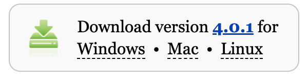
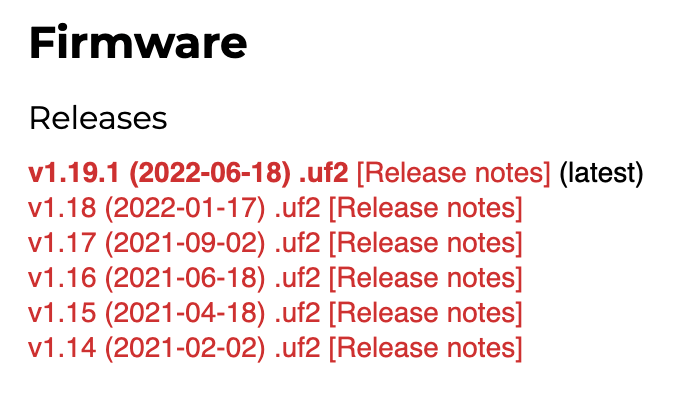
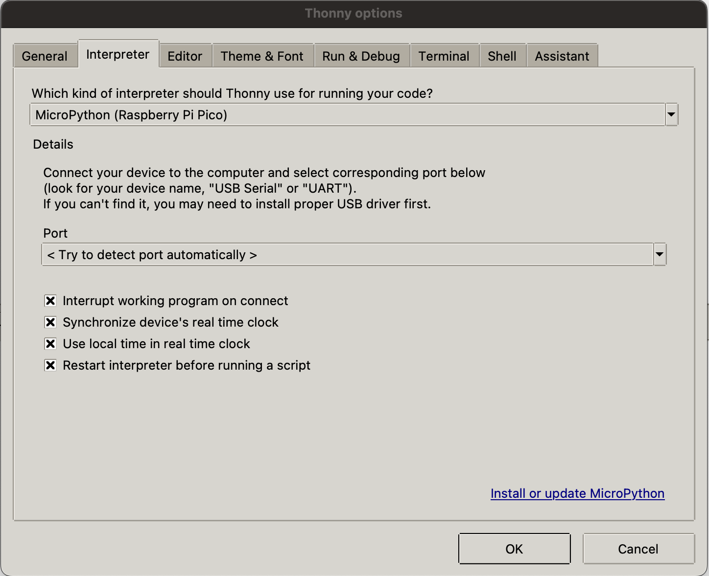
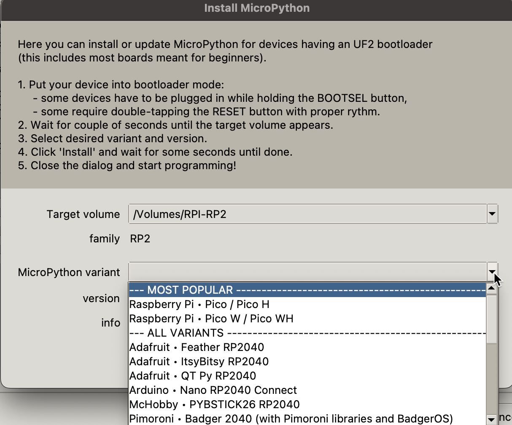
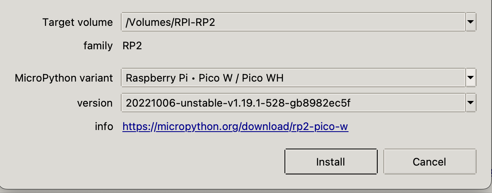
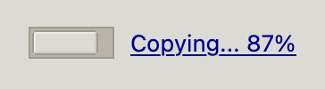
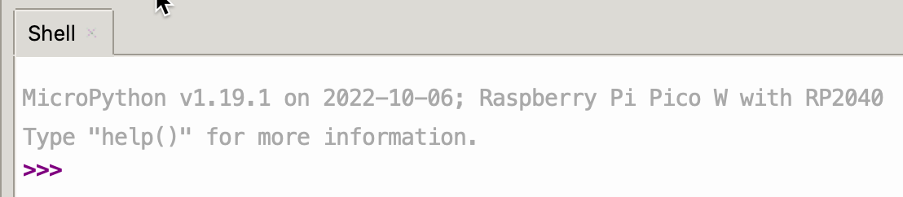

Desktop Setup
In this lesson, we will review the steps to get your PC or Mac setup to use the free open source Thonny Python Integrated Development Environment (IDE). We will assume you are using either the Raspberry Pi Pico or the Raspberry Pi Pico "W" for thee lessons.
About Thonny
Thonny is an ideal tool for writing MicroPython code for students just getting started. It is free, simple to use, and it runs on PCs running Windows, Macs and Linux systems such as the Raspberry Pi.
Step 1: Install Thonny
The installation of Thonny will vary depending on the type of computer you are using. For both Windows and Mac, you must first download an installer program. The links to these downloads are on the main Thonny page:

For all the versions of Linux, you can open the command shell an type in the correct installation command. For people using the Raspberry Pi operating system, Thonny may already be included in your software.
Thonny Versions
These labs have all been tested on Thonny Version 4.0.4.
Step 2: Configure the MicroPython Firmware
After you first plug in a Raspberry Pi Pico, you will need to install the correct runtime library for the Pico. This just takes a minute and you will only have to do it once for each microcontroller.
Since version 4.0.0 Thonny can detect the microcontroller you are using and download the firmware.
Manually Downloading the Firmware
There are occasions that the automatic firmware download in Thonny may not work. In this case you will need to manually download the firmware from the MicroPython web site.
Here are the links to the Pico Firmware (called RP2-pico):

Step 3: Configure Interpreter
Thonny is designed to automatically detect the correct device and configure the right interpreter. You can verify this by using the Thonny Options menu and move to the Interperter tab.

Note that the MicroPython (Raspberry Pi Pico) is selected.
Thonny Firmware List

After you select a rutime version, Thonny will give you the details about this version.


After Thonny installs the new firmware on the Pico it instructs the Pico to "restart" using the new firmware. This makes the USB drive appear to be removed without a disconnect and results in an error. This is normal so don't worry.

